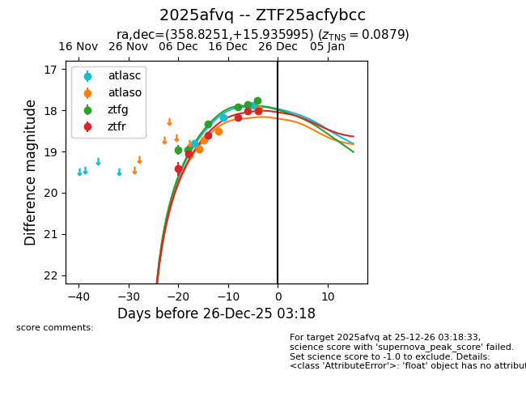
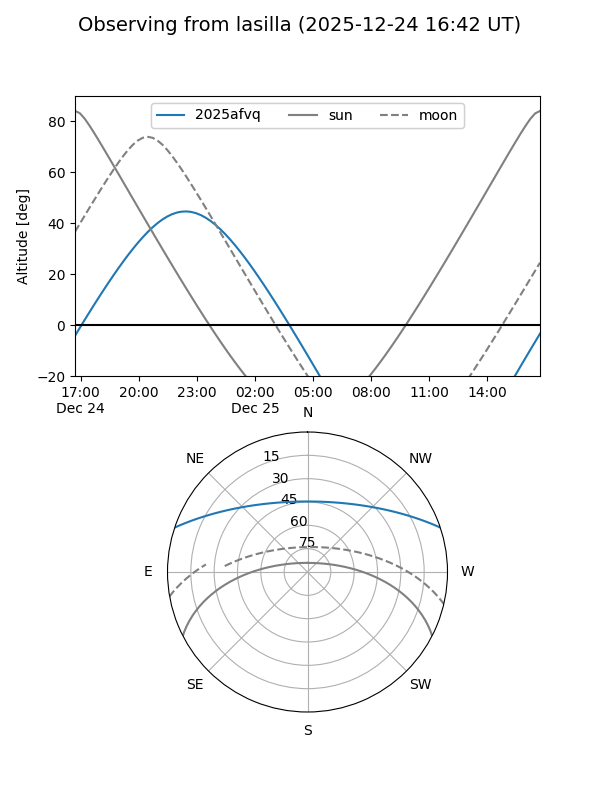
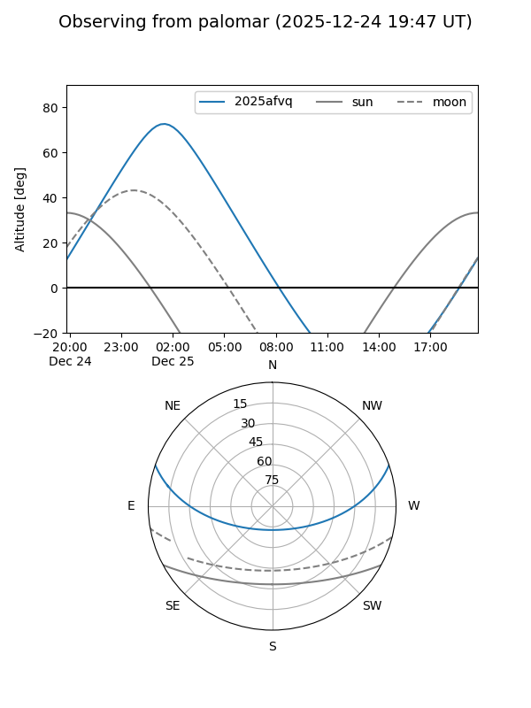
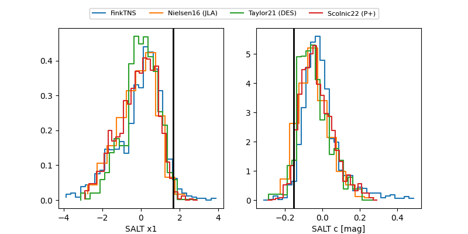

2025afvq
Target 2025afvq at 2025-12-18 10:45
Aliases and brokers:
FINK: fink-portal.org/ZTF25acfybcc
Lasair: lasair-ztf.lsst.ac.uk/objects/ZTF25acfybcc
ALeRCE: alerce.online/object/ZTF25acfybcc
TNS: wis-tns.org/object/2025afvq
YSE: ziggy.ucolick.org/yse/transient_detail/2025afvq
alt names
ZTF25acfybcc (ztf,fink_ztf)
2025afvq (tns,yse)
Coordinates:
equatorial (ra, dec) = 358.8251,+15.93600
equatorial (HMS+DMS) = 23:55:18.03,+15:56:09.58
galactic (l, b) = (103.7350,-44.83308)
Photometry
last atlasc=18.20, atlaso=18.50, ztfg=17.92, ztfr=18.61
2 atlasc, 3 atlaso, 4 ztfg, 3 ztfr detections
Lightcurve

Visibility


Additional plots
